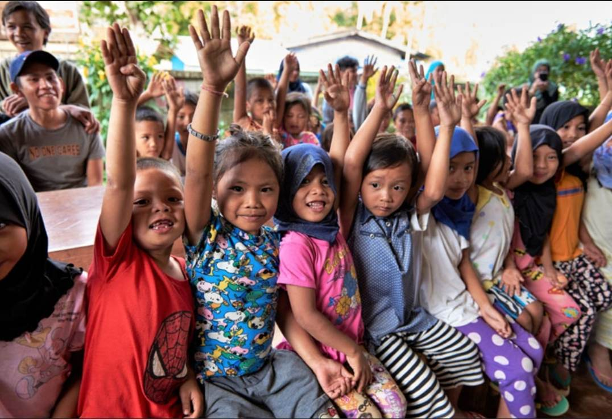

SMAC
About SMAC
SMAC is an institution that exists to help the children who are alone and are in bad conditions. SMAC provides home, education, and health care services for these children. The overall goal of SMAC is to heal these children, to let them experience love and care, to let them enjoy the fullness of life, and to develop them into good people. In conclusion, SMAC provides most of the things that an abandoned child needs in order to heal from their traumas, experience a good life, and develop into a good person.
General Information
Institution Name: SMAC
Address: Purok 6 Habana Compound 8022 Tugbok Davao City
Contact Person/s: Sr.Luzviminda C. Pepito
(srluzvimindacpepito@gmail.com)
Contact Number/s: 09432466811; 082 - 2930949

{kind=link}
Creator of the Webpage - Japal IV Guiani
-The creator of the index webpage is Japal S. Guiani IV. He was born on September 12, 2007 and is 15 years old. He enjoys playing instruments, cooking, sports and reading books. He is from the section of 9-Favre and lives in Bangkal. He aspires to be an engineer and a businessman.